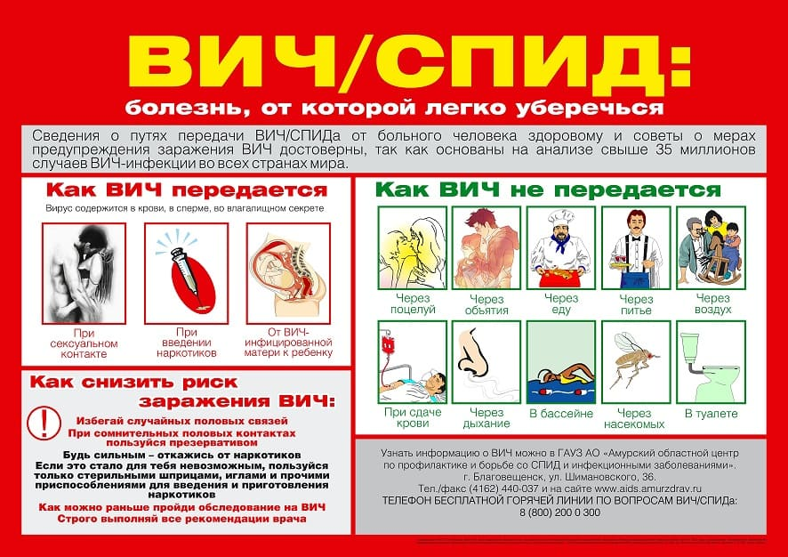

По сравнению с многими другими инфекционными заболеваниями СПИД встречается у грудных детей довольно редко. Но занимает ведущие позиции в списке родительских тревог.

СПИД расшифровывается как «синдром приобретенного иммунодефицита» и вызывается вирусом иммунодефицита человека, или ВИЧ. Этот вирус обезоруживает иммунную систему, делая организм уязвимым для несметного числа инфекций, таких как пневмония и сепсис.
У младенцев СПИД также вызывает аномалии развития головного мозга, замедление роста, опухоли и через некоторое время заканчивается фатальным исходом.
Вот самые основные вопросы, возникающие у родителей по поводу СПИДа.
Как ребенок может заразиться СПИДом?
СПИД может передаваться только такими путями:
• через половой акт;
• при переливании крови;
• через инфицированную иглу при подкожных инъекциях;
• от инфицированной матери ребенку во время беременности или, возможно, через грудное молоко.
• СПИДом нельзя заразиться через:
• слюну;
• слезы;
• кашель;
• чихание;
• пот;
• предметы обихода;
• посуду;
• сиденья в туалете;
• домашних животных;
• мух;
• комаров и москитов;
• экскременты;
• одежду;
• в бассейне.
Может ли мой ребенок заразиться СПИДом, играя с зараженным СПИДом ребенком?
Нет. Вирус СПИДа не распространяется по воздуху. Вот свидетельство того, насколько сложно одному ребенку передать СПИД другому: исследования показали, что дети, живущие с братьями или сестрами, зараженными СПИДом, не заразились СПИДом, хотя у них общие игрушки, зубные щетки, стаканы и т. д.
Может ли мой ребенок заразиться СПИДом в детском саду?
Дети заражаются в детском саду какой угодно иной инфекцией, но только не СПИДом. СПИД не передается при объятиях или поцелуях, и специалисты, занимающиеся вопросами СПИДа, убеждены, что передача вируса через укус другого ребенка чрезвычайно маловероятна. Даже если инфицированный ребенок поранится, для заражения инфицированной крови нужно попасть в кровь другого ребенка, например через открытую рану. Хотя теоретически это возможно, такое совпадение очень маловероятно.
Может ли ребенок заразиться СПИДом через домашних животных или через игрушки?
Нет. Вирус СПИДа способен выжить только в человеческом организме. Даже игрушки, которые могут быть заражены инфицированной кровью, можно дезинфицировать простой хозяйственной хлоркой.
Может ли инфицированная СПИДом беременная женщина передать заболевание своему еще не рожденному ребенку?
Да, исследования показали, что вероятность такой передачи составляет 30–50 %.
Может ли ребенок получить СПИД при переливании крови?
Сегодня риск практически сведен к нулю. При современной технологии анализов крови Красный Крест считает, что риск составляет примерно один к 40 000 или один к 1 000 000. Поскольку даже такой ничтожный риск будет тревожить вас, если ребенку потребуется переливание крови, донором можете стать вы, или член вашей семьи, или же друг с совместимой группой крови.
Может ли СПИД передаться от инфицированной матери ее ребенку через грудное молоко?
Специалисты в области исследований СПИДа все еще не могут дать окончательного ответа по этому вопросу. Несколько случаев указывает на то, что женщины, заразившиеся вирусом СПИДа сразу после родов при переливании крови, передали вирус своим грудным детям через молоко. Были также случаи, когда матери заражались СПИДом во время беременности и выкармливали своих детей грудью в течение примерно семи месяцев, не передав им вирус. Все специалисты согласны в том, что риск передачи СПИДа через грудное молоко определенно ниже риска передачи его через кровь во время беременности. На данный момент возможность передачи вируса через грудное молоко не до конца изучена, и каждая пара мать – ребенок должна рассматриваться индивидуально, чтобы принять решение, допустимо для них грудное вскармливание или нет. Это опасение определенно не должно отвернуть от грудного вскармливания мать, которая не знает, есть ли у нее вирус.
Безопасно ли это для меня, если я усыновлю ВИЧ-инфицированного ребенка?
Да, безопасно. Как в школе или в детском саду, вероятность того, что инфицированный ребенок передаст вирус членам своей семьи, друзьям или приемным родителям, является, согласно заявлению Специальной комиссии по СПИДу у детей Американской академии педиатрии, практически равной нулю. Исследователи напряженно работают, чтобы найти как безопасное и эффективное средство для лечения СПИДа, так и вакцину для его предотвращения. На данный момент единственный способ профилактики СПИДа у детей – это профилактика его у взрослых.
Марта, Уильям, Роберт, Джеймс Сирс"Ваш малыш от рождения до двух лет"